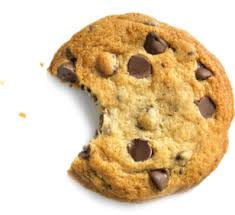
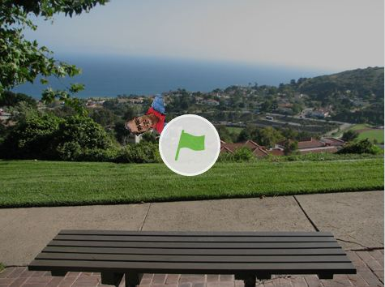

LINK TO HOME
Home
~ MY PORTFOLIO~
Most Popular Ice Cream Flavors

| Rank | Flavor |
|---|
| 1 | Vanilla |
| 2 | Strawberry |
| 3 | Chocolate |
| 4 | Cookies and Cream |
| 5 | Mint Chocolate Chip |
My First Scratch Tutorial

This is my first project for CSP. This shows that my head is flying in a park. It took me a long time to do it. Later on I was satisfied with it.
Pac-man Art
This is one of the projects I did with my partner. It is pacman art. If you move the move you will find different colors of the rainbow!
My Math Interactive Project

This is my project for AP CSP. I made my AP stats homework into python